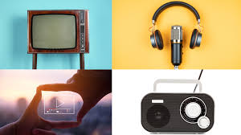

Published on May 8, 2026

Broadcast media continues to evolve with digital innovation reshaping how audiences consume content. Traditional television is merging with online platforms to create hybrid experiences.
From interactive shows to live streaming, the industry is adapting rapidly to meet the demands of modern viewers.
Broadcasters are embracing cloud technology, AI-driven analytics, and personalized recommendations to enhance viewer engagement.
Despite progress, challenges such as licensing, monetization, and audience fragmentation remain critical issues to address.